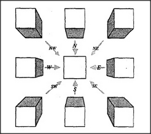

What makes objects seem to stay in place no matter how the viewer moves? To common sense this is no mystery: it's simply that we're seeing all the time and keeping contact with the world. However, I suspect that if we had to start seeing all over again from every moment to the next, we'd scarcely be able to see at all. This is because our higher-level agents don't see the outputs of the sensors in our eyes at all. Instead, they watch the states of middle-level agencies that don't change state so frequently. What keeps those inner models of the world from changing all the time? This is the function of our frame-arrays: to store what we learn about the world at terminals that stay unchanged when we move our heads and bodies around. This explains a wonderful pseudoparadox: objects in the world seem to change only when the pictures they project into our eyes don't change — that is, don't change according to our expectations. For example, when you walk past a circular dish, your frame-arrays expect that circle to turn into an ellipse. When that actually happens,
the shape continues to look circular. However, should that expected change fail to occur, the shape will seem to change of its own accord.
How, then, do we automatically compensate for changes of view? The system could work just as we described in section 24.8: by using the same direction-nemes both to control our own motions and to select frames from our frame-arrays. For example, you might use several frames to represent an image of a cube, arranged in a network like this:
When you activate your move east direction-neme in order to make your body move in that direction, the same signal will also make this frame-array replace the middle frame with the one to its left. This will compensate for your change of viewpoint and determine what you expect to see — and the scene will appear to remain stationary! Michael Crichton has suggested that when you move inside such a space, you must unconsciously be registering the distortions of the shape, the moving walls and corners. Only you don't interpret these as changes in the room itself, but use them as more accurate cues to orient yourself in the space.
You can bypass this entire system by gently pushing the side of your eye with your finger; then the world will indeed appear to move, because your frame-arrays do not receive the corresponding direction signals!